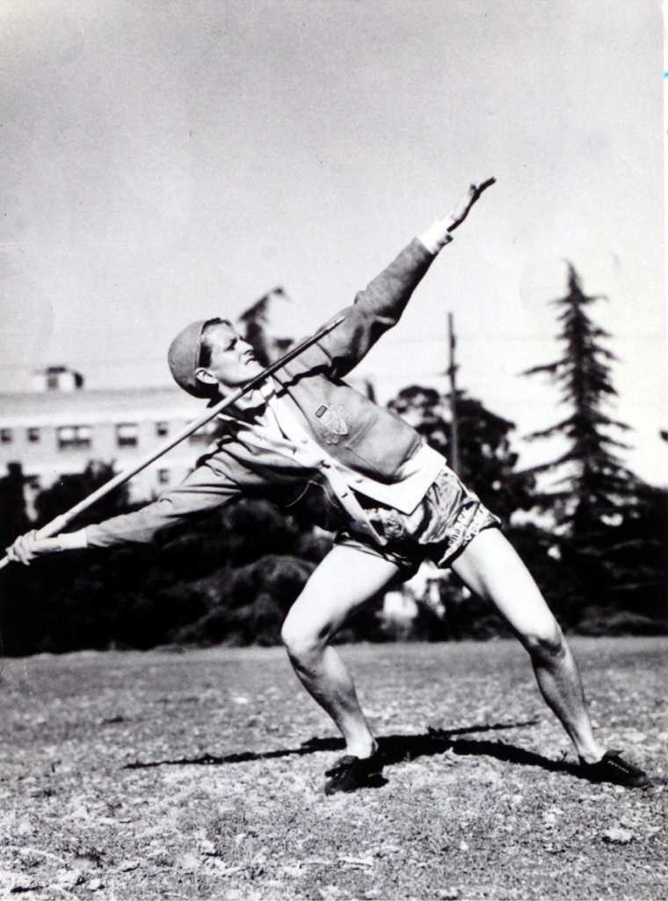
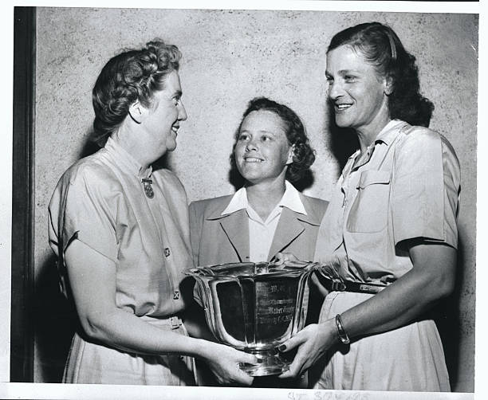

Babe Didrikson's Javelin

Patty Berg's Trophy
This is the javelin that the famous Babe Didrikson practiced with for the Olympics. She would go on to win the gold medal in the javelin throw. She had also won the gold medal for the 80 metre hurdle but was awarded silver for her high jump because she had used an unorthodox method. This javelin was chosen to represent the success of Babe Didrikson, who from a young age knew she would be one of the greatest athletes to ever live. The fact that she had to face a lot of challenges in life because of her gender makes this an even more inspiring story about perseverance and she proved that women can do anything men can. This artifact was worthy of making the cut because it was a tool used by an empowering woman to prove misogynists wrong and truly become one of the greatest athletes in history. Women for a long time were told that playing sports competitively was not an option, and women should only play recreationally. The years leading up to the 1940s were full of women challenging the societal norms that seemingly everyone agreed on and when Babe Didrikson came to top it all off, it showed women did have power and will do what they want and not what society wants them to. This story behind the artifact answers just a part of the essential question. This victory for women in sports represents the overarching goal of achieving equality for women all across the nation and eventually the world.
This artifact shows Patty Berg receiving an award from both the president of Women’s Western Golf Association and Babe Didrikson. Patty Berg, who is in the center of the picture, was one of Babe Didrikson’s (right) fellow competitors in golf tournaments. They were both seen as the best women golfers of the era, and it is only fitting for Patty Berg’s top adversary to hand her the trophy for winning the Women’s Western Open. This artifact was chosen because along with this trophy, Patty Berg had won $500 and instead of keeping it to herself, decided it would be best to donate the prize money to a fund for the advancement of golf amongst young women. This selfless act from young and talented Patty Berg exemplifies how women worked together to show the nation that they want equality and nothing less. This picture of Patty Berg being handed the trophy by her greatest competitor in golf answers another significant part of the essential question. These two opponents in sports had great sportsmanship, and showed the world that they fought for the same thing. Both Patty Berg and Babe Didrikson fought for equality for women in sports which means they also fought for overall equality for women. It is truly heartwarming to see such competitive opponents coming together and representing the strength of women and it goes without saying that their feats in sports show that women are more than capable of acquiring their rights, and it is only a matter of time until they do gain these basic human rights.